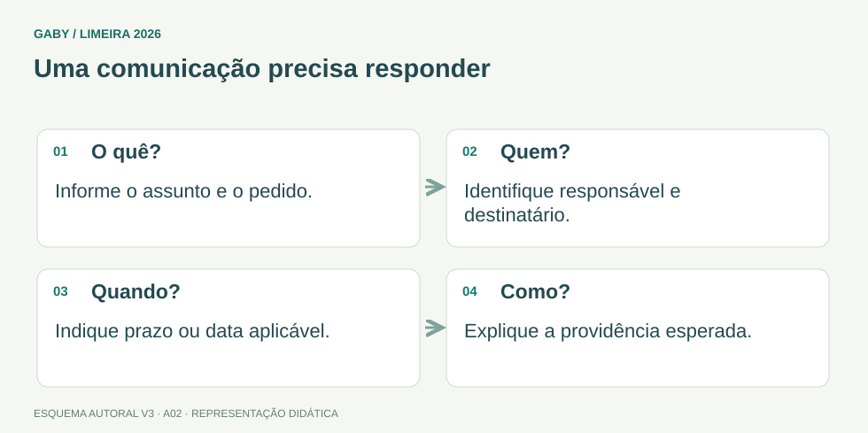

Objetivos do módulo
- Entender finalidade e estrutura básica de documentos administrativos.
- Diferenciar ata, ofício, memorando e formulário.
- Interpretar organogramas e fluxogramas como ferramentas de organização.
- Aplicar os atributos da redação oficial (clareza e precisão, objetividade, concisão, coesão e coerência, impessoalidade, formalidade e padronização, norma padrão) na revisão de um texto.
- Montar um documento no padrão ofício: cabeçalho, identificação do expediente, local e data, endereçamento, assunto, texto, fecho e identificação do signatário.
- Usar pronomes de tratamento e vocativos e explicar o que determina o Decreto nº 9.758/2019.
- Distinguir ofício circular, ofício conjunto, exposição de motivos, mensagem, despacho, portaria e outros documentos de rotina.
- Redigir e-mail oficial conforme o Manual de Redação da Presidência da República.
Uma comunicação precisa responder

Descrição em texto do esquema
- O quê?: Informe o assunto e o pedido.
- Quem?: Identifique responsável e destinatário.
- Quando?: Indique prazo ou data aplicável.
- Como?: Explique a providência esperada.
Oficina visual · aplique o esquema
Melhore: “Favor resolver isso logo.” Considere a conferência de uma planilha até sexta-feira.
Atividade autoral complementar da V3. Registre sua resposta; a resolução está no arquivo de gabarito e revisão.
Mapa do conteúdo
- 1. Rotina administrativa
- 2. Ata
- 3. Ofício e memorando
- 4. Formulários, tabelas e planilhas
- 5. Organograma e fluxograma
- 6. Redação oficial: atributos do texto
- 7. Pronomes de tratamento, vocativo e Decreto nº 9.758/2019
- 8. O padrão ofício
- 9. Variações do ofício e outros documentos
- 10. Correio eletrônico (e-mail) oficial
1. Rotina administrativa
Rotina administrativa é o conjunto de procedimentos repetidos que mantém o fluxo de trabalho: receber demandas, registrar, distribuir, acompanhar, arquivar e comunicar resultados. Uma boa rotina define responsabilidades, prazos, registros e pontos de controle.
Protocolo
Protocolo é o conjunto de atividades de controle dos documentos que entram, circulam e saem do órgão; a palavra também nomeia o setor que as executa. No Poder Executivo federal, essas atividades são padronizadas pelo anexo da Portaria Interministerial nº 1.677/2015. Pelo item 2 desse anexo, são atividades de protocolo o recebimento, a classificação, o registro, a distribuição, o controle da tramitação, a expedição e a autuação de documentos avulsos para formação de processos. O glossário do mesmo anexo (item 4) define:
- registro: cadastramento das informações para controlar a tramitação dos documentos produzidos e recebidos pelo órgão;
- tramitação: curso do documento desde a sua produção ou recepção até o cumprimento de sua função administrativa;
- processo: conjunto de documentos avulsos oficialmente reunidos e ordenados no decurso de uma ação administrativa.
Essa portaria obriga órgãos federais; o município segue norma própria, mas os conceitos são os mesmos. Autuação, registro e encaminhamento são aprofundados no módulo Assistente Administrativo 03.
Agenda
Agenda é o registro organizado dos compromissos de uma pessoa ou de uma unidade: data, horário, local, participantes e assunto. Serve para planejar o trabalho, evitar dois compromissos no mesmo horário e lembrar prazos. Quem cuida da agenda de uma chefia confirma presenças, registra alterações e avisa os envolvidos.
2. Ata
Ata registra acontecimentos e deliberações de reunião. Deve permitir reconstruir o que ocorreu: data, local, participantes ou quórum conforme prática adotada, assuntos, decisões e encerramento. O foco é fidelidade e clareza, evitando opiniões pessoais do redator.
O Manual de Redação da Presidência da República não regula a ata. Manuais de órgãos públicos a tratam; o Manual de Atos e Comunicações Oficiais da Universidade Federal Fluminense (UFF, item 3.2), por exemplo, define a ata como registro narrativo fiel dos fatos e das decisões de assembleia, sessão ou reunião e orienta:
- o título indica o número de ordem da reunião, o órgão, a data, o local, os participantes e a pauta;
- o texto é escrito de forma contínua, sem parágrafos, rasuras ou emendas, evitando abreviaturas e siglas e com os números por extenso;
- erro percebido durante a redação é corrigido com a palavra “digo”, entre vírgulas; engano percebido depois, com “Em tempo:” seguido da correção;
- depois de aprovada, a ata não pode ser modificada.
Cada órgão pode ter regras próprias (livro, folhas numeradas, quem assina). Em prova, a ideia constante é: a ata registra com fidelidade o que ocorreu e o que foi decidido.
3. Ofício e memorando
Ofícios são comunicações oficiais formais entre unidades, autoridades ou destinatários externos conforme a organização. Memorandos são tradicionalmente associados à comunicação interna. A terminologia pode variar em sistemas modernos, por isso em prova é importante seguir o conceito indicado pelo edital/contexto.
O que mudou na 3ª edição do Manual de Redação da Presidência
Até a 2ª edição do Manual havia três expedientes, que se diferenciavam mais pela finalidade do que pela forma (item 5):
| Expediente | Quem usava, até a 2ª edição |
|---|---|
| Aviso | expedido exclusivamente por Ministros de Estado, para autoridades de mesma hierarquia |
| Ofício | expedido para e pelas demais autoridades |
| Memorando | expedido entre unidades administrativas de um mesmo órgão |
A 3ª edição (2018) aboliu essa distinção: passou a usar o termo ofício nas três hipóteses, com nomenclatura e diagramação únicas, o padrão ofício (seção 8 desta aula). Portanto, no Manual vigente, memorando e aviso deixaram de existir como espécies de documento; a comunicação entre setores do mesmo órgão também é ofício.
4. Formulários, tabelas e planilhas
Formulários padronizam coleta de dados. Tabelas organizam informação em linhas e colunas. Planilhas permitem cálculos, registros e acompanhamento. Padronização reduz omissões e facilita conferência.
5. Organograma e fluxograma
Organograma representa estrutura organizacional e relações de subordinação/coordenação. Fluxograma representa sequência de etapas, decisões e caminhos de um processo. Não confunda estrutura “quem responde a quem” com fluxo “o que acontece depois”.
| Ferramenta | Representa |
|---|---|
| Organograma | estrutura e relações organizacionais |
| Fluxograma | sequência e decisões de um processo |
| Formulário | campos padronizados para coleta |
| Planilha | dados tabulares e cálculos/acompanhamento |
Como ler um organograma
O organograma é uma representação gráfica (visual) da estrutura organizacional, como define, por exemplo, o procedimento operacional de organograma da Secretaria de Estado de Gestão e Recursos Humanos do Espírito Santo. Cada caixa representa uma unidade ou um cargo (Secretaria, Departamento, Divisão, Seção). As linhas que ligam as caixas mostram a subordinação: a unidade de cima é a superior das que estão ligadas abaixo dela. Caixas no mesmo nível indicam unidades de mesma hierarquia.
- Mostra tanto a relação entre superior e subordinado quanto a posição das unidades de mesmo nível.
- Não é tabela, lista nem nuvem de palavras: é um desenho de caixas e linhas.
- Não informa datas, prazos nem a sequência das etapas de um trabalho.
- Precisa ser atualizado quando a estrutura muda: criação de setor, mudança de nome ou de subordinação.
Como ler um fluxograma
No curso Introdução à Gestão de Processos da Escola Nacional de Administração Pública (Enap, módulo 2, item 7.3), o fluxograma é a representação gráfica de uma série de atividades que descrevem um processo. Ele usa símbolos para os diferentes tipos de operação, dá uma visão global do processo e ajuda a identificar desvios e oportunidades de melhoria.
Um fluxograma simples tem início, atividades em sequência, pontos de decisão (uma pergunta com duas saídas, como “sim” e “não”) e fim. Exemplo: pedido de material → o almoxarifado confere o estoque → há estoque? → se sim, entrega; se não, abre pedido de compra.
Organograma, fluxograma e cronograma
| Ferramenta | Pergunta que responde | Exemplo |
|---|---|---|
| Organograma | Como o órgão está estruturado? Quem responde a quem? | Secretaria de Educação → Departamento de Ensino → escolas |
| Fluxograma | Qual é o caminho do trabalho? O que acontece depois? | etapas da matrícula, da entrega do pedido até a confirmação |
| Cronograma | Quando cada atividade será feita? | calendário de etapas de um projeto, com datas de início e fim |
6. Redação oficial: atributos do texto
Redação oficial é a maneira pela qual o Poder Público redige comunicações oficiais e atos normativos (Manual de Redação da Presidência da República, 3ª edição, 2018, item 2). O Manual trata da administração pública federal. Estados e municípios podem ter regras próprias, mas as bancas usam o Manual como parâmetro. Os números entre parênteses nesta aula são os itens do Manual.
Pelo item 3, a redação oficial deve caracterizar-se por: clareza e precisão; objetividade; concisão; coesão e coerência; impessoalidade; formalidade e padronização; e uso da norma padrão da língua portuguesa. O Manual liga esses atributos ao art. 37 da Constituição: publicidade, impessoalidade e eficiência orientam também a elaboração dos textos oficiais.
Clareza (item 3.1)
Claro é o texto que possibilita imediata compreensão pelo leitor. Para obter clareza, o Manual sugere:
- usar palavras e expressões simples, em seu sentido comum; em assunto técnico, usar a nomenclatura própria da área;
- usar frases curtas e bem estruturadas, com as orações na ordem direta, e evitar intercalações excessivas;
- manter a uniformidade do tempo verbal em todo o texto;
- não utilizar regionalismos e neologismos;
- pontuar adequadamente o texto;
- explicitar o significado da sigla na primeira referência a ela;
- usar palavras de outro idioma apenas quando indispensáveis, grafadas em itálico.
Ordem direta é sujeito + verbo + complementos. Compare:
| Redação confusa | Redação clara |
|---|---|
| Aos servidores, até o dia 10, deverá ser, pela chefia, a escala de férias entregue. | A chefia entregará a escala de férias aos servidores até o dia 10. |
| O munícipe que comparecer, caso tenha agendado, e desde que traga os documentos, os quais serão conferidos, será atendido no guichê 2, onde também se retira a senha. | Para ser atendido, o munícipe precisa ter agendamento e trazer os documentos. A senha e o atendimento são no guichê 2, onde os documentos serão conferidos. |
Dividir uma frase longa em frases menores melhora a clareza desde que as condições e a relação entre as ações sejam mantidas. No segundo exemplo, as exigências de agendamento e de documentos e o local continuam no texto.
Siglas
Na primeira vez em que a sigla aparece, escreva o nome por extenso e, em seguida, a sigla (itens 3.1 e 10.6). O Manual separa os dois por travessão: “Secretaria Municipal de Administração – SMA”. Depois disso, use apenas “SMA”. Quem trabalha no órgão conhece as siglas internas; o leitor de fora, não. O item 10.6 também pede que não se usem siglas de forma indiscriminada.
Termos técnicos
Linguagem técnica não é proibida: em assunto técnico, usa-se a nomenclatura da área. O que o Manual pede (item 3.1) é que o redator explicite, desenvolva e esclareça os termos técnicos, o significado das siglas e das abreviações e os conceitos específicos que não possam ser dispensados. Exemplo: “o concurso aguarda homologação (ato da autoridade que confirma o resultado final)”. Trocar o termo necessário por uma palavra vaga prejudica a precisão; usar termo técnico sem relação com o assunto, só para impressionar, prejudica a clareza.
Precisão (item 3.1)
A precisão complementa a clareza. Caracteriza-se por:
- articulação da linguagem comum ou técnica para a perfeita compreensão da ideia;
- manifestação da ideia com as mesmas palavras, evitando o emprego de sinônimos com propósito apenas estilístico;
- escolha de expressão ou palavra que não dê duplo sentido ao texto.
Mesma denominação para o mesmo conceito. Se o contrato define “a contratada”, o texto não deve passar a chamá-la de “a fornecedora”, “a empresa” e “a prestadora”: o leitor pode entender que são pessoas diferentes. Em texto técnico, repetir o termo é qualidade, não defeito.
Ambiguidade (item 11.6). Ambígua é a frase que pode ser entendida em mais de um sentido. Em geral, ela decorre de um pronome (pessoal, possessivo, oblíquo ou relativo) com mais de um antecedente possível:
| Frase ambígua | Dúvida | Correção |
|---|---|---|
| O coordenador avisou o estagiário de que seu relatório foi devolvido. | O relatório é do coordenador ou do estagiário? | O coordenador avisou o estagiário de que o relatório do estagiário foi devolvido. |
A correção consiste em nomear o referente. Trocar uma palavra por sinônimo ou mudar a pontuação não elimina a dúvida.
Releitura e revisão
O Manual considera indispensável a releitura de todo o texto: os trechos obscuros vêm principalmente da falta dela (item 3.1). Na revisão, avalia-se se o expediente será de fácil compreensão pelo destinatário, porque o que parece óbvio a quem escreve pode ser desconhecido de quem lê. A revisão atenta exige tempo, e a pressa compromete a clareza.
Revisar não é só conferir a ortografia. O corretor ortográfico do editor de texto aponta erros de grafia; ele não confere se o nome do destinatário está certo, se números e datas estão corretos, se o anexo citado foi incluído nem se o texto faz sentido. Antes de enviar, confira: sentido, dados, destinatário, anexos e, por fim, ortografia.
Objetividade (item 3.2)
Ser objetivo é ir diretamente ao assunto, sem voltas e sem redundâncias. Para isso, o redator precisa saber de antemão qual é a ideia principal e quais são as ideias secundárias. As secundárias que esclarecem, detalham ou exemplificam a principal ficam; as que não acrescentam informação nem têm relação com ela são dispensadas.
Exemplo: um aviso sobre manutenção do sistema de protocolo deve trazer logo no início a informação principal (o sistema ficará indisponível no sábado, das 8h às 12h) e, em seguida, o que o usuário deve fazer. Um histórico do sistema antes disso só atrasa a leitura. Do mesmo modo, a resposta a um pedido de informação começa pela resposta.
O Manual adverte: objetividade não torna o texto rude nem suprime a delicadeza de expressão.
Concisão (item 3.3)
Concisão não é economia de pensamento: não se eliminam passagens substanciais só para reduzir o tamanho do texto. Trata-se de excluir palavras inúteis, redundâncias e passagens que nada acrescentam. O texto também deve evitar comentários supérfluos, adjetivos e advérbios inúteis e subordinação excessiva.
| Pode cortar | Não pode cortar |
|---|---|
| redundância: “há dois anos atrás” → “há dois anos”; “conclusão final” → “conclusão” | prazo, data, horário e local de que o leitor precisa para agir |
| rodeio: “vimos, por meio do presente, informar que” → “informamos que” | condição que limita uma afirmação: “o pagamento será liberado após a entrega da nota fiscal” |
| elogio, comentário pessoal, saudação repetida | identificação do documento, do responsável e do destinatário |
Se o corte muda o sentido, não é concisão: é perda de informação. Tirar a condição do exemplo acima faria o texto afirmar que o pagamento será liberado em qualquer caso.
Coesão e coerência (item 3.4)
O texto tem coesão e coerência quando palavras, frases e parágrafos estão entrelaçados e dão continuidade uns aos outros. O Manual cita quatro mecanismos:
| Mecanismo | O que é | Exemplo |
|---|---|---|
| Referência | um termo depende de outro para ser interpretado; pode retomar algo já dito ou antecipar algo que virá | A diretora assinou o termo. Ela o enviou ao setor de compras. |
| Substituição | uma palavra ou expressão é colocada no lugar de outra | O ofício está pronto. O documento segue hoje. |
| Elipse | omissão de um termo recuperável pelo contexto | A Seção A cuida das compras; a Seção B, dos contratos. |
| Conjunção | liga orações, períodos ou parágrafos | O prazo foi prorrogado, pois o sistema ficou indisponível. |
Coesão referencial. O termo retomado precisa ser identificável. Se o relatório cita os Processos nº 101, 102 e 103 e depois diz “o referido processo foi arquivado”, o leitor não sabe qual. A correção é identificar: “o Processo nº 102 foi arquivado”. Trocar “processo” por “expediente” mantém a dúvida.
Coerência. As informações precisam ser compatíveis entre si. Há contradição quando o texto afirma que “nenhum pedido ficou pendente em outubro” e, adiante, que “restam dois pedidos de outubro sem resposta”. Mudar fonte, margem ou título não resolve: é preciso corrigir a informação.
Conectivos. As conjunções exprimem relações lógicas; não são enfeite.
| Relação | Conectivos comuns |
|---|---|
| conclusão | portanto, logo, por isso |
| oposição | mas, porém, entretanto |
| causa ou explicação | porque, pois, uma vez que |
| condição | se, caso, desde que |
| concessão | embora, ainda que |
Se os fatos dizem que a entrega ocorreu no dia 12 e o prazo terminava no dia 15, a frase “portanto, cabe multa por atraso” é incoerente: a conclusão não decorre dos fatos. Deve-se rever a conclusão e o conectivo, não apenas a pontuação.
Impessoalidade (item 3.5)
A impessoalidade decorre do art. 37 da Constituição. A redação oficial é feita sempre em nome do serviço público e no interesse geral dos cidadãos. O tratamento impessoal dos assuntos decorre de três fatores:
- ausência de impressões individuais de quem comunica: mesmo assinada por um chefe de seção, a comunicação é feita em nome do serviço público. Daí vem a padronização, que dá uniformidade aos textos de setores diferentes;
- impessoalidade de quem recebe: o destinatário pode ser um cidadão, uma instituição privada ou outro órgão público; em todos os casos é tratado de forma homogênea e impessoal;
- caráter impessoal do assunto: como as comunicações tratam de interesse público, não cabe qualquer tom particular ou pessoal.
Consequências: a impessoalidade não vale só quando o destinatário é um órgão público; ela não dispensa a padronização, e sim a favorece; e não há lugar para impressões pessoais como as de uma carta a um amigo.
| Com marca pessoal | Impessoal |
|---|---|
| Fiquei muito decepcionado com a demora de vocês. | O relatório não foi entregue no prazo. Solicito o envio até 20 de março. |
Formalidade e padronização (item 3.6)
- As comunicações administrativas devem ser sempre formais, isto é, obedecer a certas regras de forma. Isso vale tanto para o meio eletrônico (o e-mail, por exemplo) quanto para os documentos impressos.
- Formalidade é também civilidade no enfoque dado ao assunto e uniformidade das comunicações.
- A digitação sem erros, o uso de papéis uniformes para o texto definitivo (quando houver impressão) e a correta diagramação do texto são indispensáveis para a padronização.
Formalidade não é linguagem difícil. O Manual recomenda:
- a língua culta é contra a pobreza de expressão, e não contra a sua simplicidade;
- o uso do padrão culto não significa empregar a língua de modo rebuscado nem utilizar figuras de linguagem próprias do estilo literário;
- a consulta ao dicionário e à gramática é imperativa.
Padronização na prática. Os itens 5.1.6 e 5.2 pedem apresentação sóbria: fonte Calibri ou Carlito, texto em preto sobre papel branco e destaque em negrito, sem abuso. Devem-se evitar destaques com itálico, sublinhado, letras maiúsculas, sombreado ou outra formatação que afete a sobriedade e a padronização do documento. Quem usa um modelo do órgão deve usar a versão vigente e conferir, em cada documento, destinatário, dados e anexos: o modelo padroniza a forma, não substitui a conferência do conteúdo.
Uso da norma padrão (item 3.6)
Os atos e expedientes oficiais requerem o padrão culto do idioma, que segue a gramática formal e usa um vocabulário compartilhado por todos os usuários da língua. Por isso ele está acima das diferenças regionais de vocabulário, de morfologia e de sintaxe, dos modismos vocabulares e das particularidades linguísticas. Regionalismos, gírias, modismos e abreviações de conversa informal ficam fora do texto oficial.
O Manual conclui que não existe um “padrão oficial de linguagem”: o que há é o uso da norma padrão nos atos e nas comunicações oficiais. O jargão burocrático, como todo jargão, deve ser evitado, pois tem compreensão limitada.
Quadro dos atributos
| Atributo | Ideia central | Erro típico |
|---|---|---|
| Clareza | compreensão imediata | frase longa, ordem invertida, sigla sem explicação |
| Precisão | mesmas palavras para a mesma ideia; sem duplo sentido | sinônimos que mudam o referente; possessivo ambíguo |
| Objetividade | ir diretamente ao assunto | informação principal escondida no fim |
| Concisão | máximo de informação, mínimo de palavras | redundância ou, ao contrário, corte de informação necessária |
| Coesão e coerência | partes ligadas e compatíveis | retomada vaga; conclusão que não decorre dos fatos |
| Impessoalidade | sem impressões individuais | opinião, elogio ou queixa pessoal |
| Formalidade e padronização | regras de forma e apresentação uniforme | linguagem rebuscada ou, ao contrário, íntima; formatação decorativa |
| Norma padrão | gramática formal e vocabulário comum | gíria, regionalismo, jargão |
7. Pronomes de tratamento, vocativo e Decreto nº 9.758/2019
Onde o tratamento aparece (Manual, item 4.1)
O Manual pede atenção aos pronomes de tratamento em três momentos:
- endereçamento: o texto que identifica o destinatário (no envelope e no bloco de endereçamento do documento);
- vocativo: a invocação ao destinatário, no início do documento;
- corpo do texto: onde o pronome pode vir por extenso ou abreviado.
Exemplos do quadro do item 4.1 e das regras dos itens 4.4 e 5.1.4:
| Autoridade | Endereçamento | Vocativo | No texto |
|---|---|---|---|
| Presidente da República | A Sua Excelência o Senhor | Excelentíssimo Senhor Presidente da República, | Vossa Excelência (não se abrevia) |
| Ministro de Estado | A Sua Excelência o Senhor | Senhor Ministro, | Vossa Excelência (V. Exa.) |
| Senador e Deputado Federal | A Sua Excelência o Senhor | Senhor Senador, / Senhor Deputado, | Vossa Excelência (V. Exa.) |
| Destinatário tratado por Vossa Senhoria | Ao Senhor / À Senhora | Senhor ou Senhora + cargo, | Vossa Senhoria (V. Sa.) |
Não se usa “A Sua Senhoria o Senhor” no endereçamento (item 5.1.4).
Concordância com os pronomes de tratamento (item 4.1.1)
Os pronomes de tratamento referem-se à pessoa com quem se fala (segunda pessoa), mas levam a concordância para a terceira pessoa.
| Regra | Certo | Errado |
|---|---|---|
| Verbo na terceira pessoa | Vossa Senhoria receberá o crachá. | Vossa Senhoria recebereis o crachá. |
| Possessivo sempre da terceira pessoa (seu, sua) | Vossa Excelência apresentará sua proposta. | Vossa Excelência apresentará vossa proposta. |
| Adjetivo concorda com o sexo da pessoa, e não com a palavra “Excelência” ou “Senhoria” | Para um homem: Vossa Excelência foi convidado. Para uma mulher: Vossa Excelência foi convidada. | Para um homem: Vossa Excelência foi convidada. |
Vossa × Sua. “Vossa Excelência” e “Vossa Senhoria” são usados para falar com a pessoa. “Sua Excelência” é usado para falar da pessoa, como no endereçamento: “A Sua Excelência o Senhor”.
Vocativo (item 4.4)
- O vocativo é uma invocação ao destinatário e, nas comunicações oficiais, é sempre seguido de vírgula.
- Chefes de Poder: “Excelentíssimo Senhor” ou “Excelentíssima Senhora” + cargo. Ex.: Excelentíssimo Senhor Presidente do Congresso Nacional,
- Demais autoridades, mesmo as tratadas por Vossa Excelência: “Senhor” ou “Senhora” + cargo. Ex.: Senhora Ministra,
- Particular: “Senhor” ou “Senhora” + a forma usada pela instituição (Senhor Contribuinte,), ou + o nome, ou ainda “Prezado Senhor,” / “Prezada Senhora,”.
- Está abolido o uso de Digníssimo (DD) e de Ilustríssimo (Ilmo.). Deve-se evitar “doutor” usado indiscriminadamente: o tratamento por “Senhor” confere a formalidade desejada.
Decreto nº 9.758, de 11 de abril de 2019
O decreto dispõe sobre a forma de tratamento e de endereçamento nas comunicações com agentes públicos da administração pública federal direta e indireta, isto é, do Poder Executivo federal. É posterior ao Manual (2018) e simplificou o tratamento nesse âmbito. Não obriga estados nem municípios, mas a banca o usa como parâmetro.
| Dispositivo | O que determina |
|---|---|
| Art. 1º | Alcança a comunicação oral ou escrita com agentes públicos da administração federal direta e indireta e o endereçamento das comunicações escritas a eles. Vale também nas cerimônias (§ 1º) e para todos os agentes, do servidor efetivo e do terceirizado até os Ministros, o Vice-Presidente e o Presidente da República (§ 2º). |
| Art. 1º, § 3º | Não se aplica às comunicações com autoridades estrangeiras ou de organismos internacionais, nem às comunicações com agentes do Judiciário, do Legislativo, do Tribunal de Contas, da Defensoria Pública, do Ministério Público ou de outros entes federativos, quando a outra parte exigir tratamento especial com base em norma. |
| Art. 2º | O único pronome de tratamento é “senhor”, independentemente do nível hierárquico, da natureza do cargo ou da função ou da ocasião. Flexiona-se para o feminino e para o plural (parágrafo único). |
| Art. 3º, caput | Veda, ainda que abreviadas, as formas: Vossa Excelência ou Excelentíssimo; Vossa Senhoria; Vossa Magnificência; doutor; ilustre ou ilustríssimo; digno ou digníssimo; e respeitável. |
| Art. 3º, § 1º | Reciprocidade: o agente público federal que exigir essas formas, invocando normas especiais do seu cargo ou carreira, deverá tratar o interlocutor do mesmo modo. |
| Art. 3º, § 2º | Erro na forma de tratamento não autoriza negar a realização de ato administrativo nem admoestar (repreender) o interlocutor nos autos do expediente. |
| Art. 4º, caput | O endereçamento das comunicações dirigidas a agentes públicos federais não conterá pronome de tratamento nem o nome do agente. |
| Art. 4º, parágrafo único | Poderão constar o pronome de tratamento (“senhor”) e o nome do destinatário em duas hipóteses: I – quando a mera indicação do cargo ou da função e do setor da administração for insuficiente para identificar o destinatário; II – quando a correspondência for dirigida à pessoa de agente público específico. |
| Art. 5º | Entrada em vigor em 1º de maio de 2019. |
Manual ou decreto?
Os dois são cobrados. Se a questão pedir a concordância com “Vossa Senhoria” ou o quadro de autoridades, a base é o Manual (item 4.1). Se citar o Decreto nº 9.758/2019 ou a comunicação com agentes públicos federais, valem o pronome único “senhor” (art. 2º), as formas vedadas, a reciprocidade e a proibição de punir o erro de tratamento (art. 3º) e o endereçamento do art. 4º.
8. O padrão ofício
Padrão ofício é a estrutura única dos expedientes no Manual (item 5). As partes aparecem nesta ordem (item 5.1):
| Item | Parte | O que contém |
|---|---|---|
| 5.1.1 | Cabeçalho | Só na primeira página, centralizado: Brasão de Armas da República no topo, nome do órgão principal e, quando necessários, dos órgãos secundários, da maior para a menor hierarquia. |
| 5.1.2 | Identificação do expediente | Nome do documento por extenso, em maiúsculas; “Nº”; número, ano com quatro dígitos e siglas do setor, da menor para a maior hierarquia, separados por barra. Alinhada à esquerda. |
| 5.1.3 | Local e data | Cidade, vírgula e data. Alinhados à direita. |
| 5.1.4 | Endereçamento | Informa quem receberá o expediente: forma de tratamento, nome, cargo e endereço. Alinhado à esquerda. |
| 5.1.5 | Assunto | Ideia geral do documento, de forma sucinta, em negrito. |
| 5.1.6 | Texto do documento | Introdução, desenvolvimento e conclusão (ou a estrutura própria do encaminhamento de documentos). |
| 5.1.7 | Fecho | “Respeitosamente,” ou “Atenciosamente,”. |
| 5.1.8 | Identificação do signatário | Nome e cargo de quem assina, centralizados. |
Todas essas partes integram o documento: identificação do expediente e fecho, por exemplo, fazem parte da estrutura. O modelo é federal (por isso o Brasão da República); o órgão municipal aplica o modelo que sua norma indicar.
Exemplo de identificação do expediente: OFÍCIO Nº 48/2026/DRH/SMA (ofício 48, de 2026, do Departamento de Recursos Humanos, que pertence à Secretaria Municipal de Administração).
Local e data (item 5.1.3)
| Regra | Certo | Errado |
|---|---|---|
| Nome da cidade seguido de vírgula, sem a sigla da unidade da federação | Limeira, 5 de março de 2026. | Limeira/SP, 5 de março de 2026. |
| Primeiro dia do mês em numeração ordinal; os demais, em cardinal | Limeira, 1º de março de 2026. | Limeira, 1 de março de 2026. / Limeira, 2º de março de 2026. |
| Sem zero à esquerda no dia | Limeira, 5 de março de 2026. | Limeira, 05 de março de 2026. |
| Nome do mês com inicial minúscula | 5 de março de 2026. | 5 de Março de 2026. |
| Ponto-final depois da data | Limeira, 5 de março de 2026. | Limeira, 5 de março de 2026, |
| Alinhamento | data alinhada à margem direita | data centralizada ou à esquerda |
Endereçamento (item 5.1.4)
O endereçamento é a parte do documento que informa quem receberá o expediente. Pelo Manual, traz a forma de tratamento, o nome do destinatário, o cargo e o endereço postal em duas linhas, tudo alinhado à esquerda. Para quem é tratado por Vossa Excelência, a forma é “A Sua Excelência o Senhor” (ou “a Senhora”); para os demais, “Ao Senhor” ou “À Senhora”.
Nas comunicações dirigidas a agentes públicos federais, lembre-se do art. 4º do Decreto nº 9.758/2019 (seção 7): em regra, o endereçamento não traz pronome de tratamento nem nome.
Assunto (item 5.1.5)
O campo Assunto deve dar uma ideia geral do que trata o documento, de forma sucinta. É uma síntese específica do conteúdo, que permite reconhecer a matéria antes de ler o texto.
- a palavra “Assunto” vem antes, seguida de dois-pontos;
- a frase começa com inicial maiúscula, não usa verbos e tem, por sugestão do Manual, de quatro a cinco palavras;
- todo o trecho, inclusive a palavra “Assunto”, fica em negrito;
- termina com ponto-final e é alinhado à esquerda.
| Adequado | Inadequado | Por quê |
|---|---|---|
| Assunto: Manutenção dos aparelhos de ar-condicionado. | Assunto: Solicitação. | genérico: não identifica a matéria |
| Assunto: Calendário de matrículas de 2027. | Assunto: Preciso muito de uma resposta! | tem verbo, tom pessoal e não diz do que se trata |
Texto do documento (item 5.1.6)
Quando o ofício não serve para encaminhar documentos
- Introdução: apresenta o objetivo da comunicação. Evite “Tenho a honra de”, “Tenho o prazer de”, “Cumpre-me informar que”. Prefira a forma direta: Informo, Solicito, Comunico.
- Desenvolvimento: detalha o assunto. Se houver mais de uma ideia, cada uma vai em parágrafo próprio: ideias distintas em parágrafos distintos, o que dá mais clareza à exposição.
- Conclusão: afirma a posição sobre o assunto.
Exemplo de introdução direta: “Solicito a substituição de duas impressoras da Seção de Protocolo.” No desenvolvimento, um parágrafo explica o defeito das impressoras e outro informa o prazo desejado e o contato do responsável.
Quando o ofício serve para encaminhar documentos
| Situação | Como a introdução começa |
|---|---|
| O documento foi pedido | Com a referência ao expediente que solicitou o encaminhamento, seguida da identificação do documento enviado. Ex.: “Em resposta ao Ofício nº 15, de 3 de março de 2026, encaminho cópia do Relatório de Frequência de fevereiro de 2026.” |
| O documento não foi pedido | Com o motivo da comunicação, que é encaminhar; em seguida, os dados completos do documento (tipo, data, origem ou signatário e assunto) e a razão pela qual está sendo encaminhado. Ex.: “Encaminho, para conhecimento, cópia do Parecer nº 7, de 10 de março de 2026, da Procuradoria, sobre o uso de veículos oficiais.” |
No ofício de encaminhamento, só há parágrafos de desenvolvimento se o autor quiser comentar o documento encaminhado. Escrever apenas “segue anexo”, sem identificar o documento, não atende ao modelo.
Formatação do texto
- alinhamento justificado, espaçamento simples entre linhas e 6 pontos após cada parágrafo;
- recuo de parágrafo de 2,5 cm;
- parágrafos numerados apenas quando o documento tiver três ou mais parágrafos, desde o primeiro; vocativo e fecho não são numerados;
- fonte Calibri ou Carlito, tamanho 12 no corpo do texto (11 em citações recuadas e 10 em notas de rodapé).
Fechos (item 5.1.7)
O fecho arremata o texto e saúda o destinatário. O Manual substituiu os quinze padrões antigos por apenas dois, válidos para todas as modalidades de comunicação oficial:
| Fecho | Quando usar |
|---|---|
| Respeitosamente, | para autoridades de hierarquia superior à do remetente, inclusive o Presidente da República |
| Atenciosamente, | para autoridades de mesma hierarquia, de hierarquia inferior ou demais casos |
Ficam fora dessa regra as comunicações dirigidas a autoridades estrangeiras, que seguem rito próprio. Fórmulas como “Com elevada estima” ou “Cordialmente” não são fechos do Manual. O fecho fica alinhado à esquerda, com recuo de 2,5 cm, e não é numerado.
Identificação do signatário (itens 5.1.8, 4.2.1 e 4.2.2)
Excluídas as comunicações assinadas pelo Presidente da República, todas as demais devem identificar o signatário assim:
- nome: em letras maiúsculas, sem negrito; não se usa linha acima do nome;
- cargo: apenas com as iniciais maiúsculas; as preposições que ligam as palavras do cargo ficam em minúsculas;
- alinhamento: a identificação do signatário é centralizada na página.
Exemplo (centralizado no documento): MARIA APARECIDA DOS SANTOS, na primeira linha; Diretora do Departamento de Recursos Humanos, na segunda.
Recomenda-se não deixar a assinatura em página isolada: leve para essa página ao menos a última frase anterior ao fecho.
| Caso | Regra | Exemplo |
|---|---|---|
| Interino | Nomeado para ocupar transitoriamente o cargo durante a vacância. O termo vem depois do nome do cargo, sem hífen, sem vírgula e em minúsculo. | Diretor-Geral interino |
| Substituto | Designado para exercer as atribuições de cargo vago ou no afastamento ou impedimento legal do titular. Mesma grafia. | Chefe da Seção de Compras substituto |
| Signatária mulher | O cargo é flexionado no feminino. | Coordenadora de Compras; Diretora de Compras substituta |
Numeração das páginas e apresentação (itens 5.1.9 e 5.2)
- A numeração das páginas é obrigatória apenas a partir da segunda página da comunicação. O número fica centralizado, no rodapé.
- Papel A4; margem esquerda de no mínimo 3 cm, direita de 1,5 cm, superior e inferior de 2 cm.
- Texto em preto sobre papel branco; cor só para gráficos e ilustrações, se necessário.
- Destaque com negrito, sem abuso.
9. Variações do ofício e outros documentos
Circular e conjunto (item 6.1)
O nome do expediente pode receber um complemento, conforme o número de remetentes e de destinatários:
| Variação | Remetentes | Destinatários | Siglas na identificação |
|---|---|---|---|
| Ofício circular | um órgão | mais de um órgão | apenas a do órgão remetente |
| Ofício conjunto | mais de um órgão, em conjunto | um único órgão | as de todos os remetentes |
| Ofício conjunto circular | mais de um órgão, em conjunto | mais de um órgão | as de todos os remetentes |
Para memorizar: o circular “circula” entre vários destinatários; o conjunto é enviado em conjunto por vários remetentes. Exemplo: a Secretaria de Administração envia o mesmo ofício sobre o recesso a todas as secretarias → ofício circular. As Secretarias de Saúde e de Educação assinam juntas um pedido à Secretaria de Finanças → ofício conjunto.
Exposição de motivos (item 6.2)
Exposição de motivos (EM) é o expediente dirigido ao Presidente da República ou ao Vice-Presidente para: propor alguma medida; submeter projeto de ato normativo à sua consideração; ou informá-lo de determinado assunto. Quem a dirige ao Presidente é um Ministro de Estado. Quando o assunto envolve mais de um ministério, todos os Ministros envolvidos assinam, e a exposição é chamada de interministerial.
Mensagem (item 6.3)
Mensagem é o instrumento de comunicação oficial entre os Chefes dos Poderes Públicos. As mais comuns são as enviadas pelo Chefe do Poder Executivo ao Poder Legislativo para informar sobre fato da administração, expor o plano de governo na abertura da sessão legislativa, submeter matérias que dependem de deliberação do Congresso ou apresentar veto. Não confunda esse documento com a “mensagem” de e-mail do dia a dia.
Despacho
O despacho não é tratado nos expedientes da 3ª edição do Manual. O anexo da Portaria Interministerial nº 1.677/2015 (item 2.9) o define como a forma pela qual a autoridade competente dá continuidade a uma ação administrativa ou firma decisões em documentos ou processos. Há dois tipos:
- despacho informativo ou de mero expediente: dá prosseguimento ao documento ou processo (ex.: “Encaminhe-se à Seção de Pessoal para informar.”);
- despacho decisório: contém uma decisão administrativa sobre a matéria submetida à autoridade (ex.: “Defiro o pedido.”).
O despacho é, portanto, um ato de andamento ou de decisão dentro de um documento ou processo já existente. Não é um expediente enviado de um órgão a outro, como o ofício.
Portaria (item 25.1)
Portaria é o instrumento pelo qual Ministros ou outras autoridades expedem instruções sobre a organização e o funcionamento de serviço, sobre questões de pessoal e sobre outros atos de sua competência. É um ato normativo, não uma correspondência: tem parte preliminar, parte normativa e parte final, mas não tem fecho.
Outros documentos de rotina
O Manual da Presidência não regula estes documentos. As definições abaixo seguem o Manual de Atos e Comunicações Oficiais da UFF (item indicado); outros órgãos podem defini-los de modo um pouco diferente, por isso confira a norma do órgão.
| Documento | O que é |
|---|---|
| Requerimento (3.33) | documento pelo qual o interessado pede ao poder público algo a que se julga com direito, ou se defende de ato que o prejudique |
| Parecer (3.25) | estudo fundamentado que esclarece a dúvida objeto de uma consulta |
| Relatório (3.31) | documento em que o servidor expõe a atividade de um órgão ou setor ou presta contas de seus atos a autoridade superior |
| Certidão (3.5) | documento fornecido ao interessado afirmando a existência de ato ou registro constante de processo, livro ou documento da repartição; pode ser de inteiro teor ou resumida |
| Declaração (3.10) | documento firmado por servidor, em razão do cargo ou função, declarando fato que consta em livros, papéis ou documentos da Administração |
| Atestado (3.3) | documento firmado por servidor, em razão do cargo ou função, declarando fato existente que não consta em livros, papéis ou documentos da Administração |
| Circular (3.6) | correspondência expedida ao mesmo tempo a diversos destinatários para transmitir rotinas, orientações e informações; no Manual da Presidência, corresponde ao ofício circular |
Quadro comparativo
| Documento | Quem emite e para quem | Para que serve |
|---|---|---|
| Ofício | órgão ou autoridade → outro órgão, autoridade ou particular | comunicação oficial em geral, no padrão ofício |
| Ofício circular | um órgão → vários órgãos | mesmo conteúdo para vários destinatários |
| Ofício conjunto | vários órgãos → um órgão | manifestação comum de mais de um remetente |
| Exposição de motivos | Ministro de Estado → Presidente ou Vice-Presidente da República | propor medida, submeter projeto de ato normativo, informar |
| Mensagem | entre os Chefes dos Poderes Públicos | comunicações de interesse dos Poderes |
| Despacho | autoridade competente, no próprio documento ou processo | dar andamento ou decidir |
| Portaria | Ministros ou outras autoridades | instruções sobre serviço e pessoal |
| Ata | responsável pelo registro da reunião | registrar o que ocorreu e o que foi decidido |
10. Correio eletrônico (e-mail) oficial
O Manual trata do e-mail no item 6.4. A palavra tem três sentidos: gênero textual, endereço eletrônico e sistema de transmissão de mensagens. Como gênero textual, o e-mail pode ser considerado um documento oficial, assim como o ofício; por isso deve-se evitar linguagem incompatível com uma comunicação oficial. O endereço usado pelo servidor deve ser o oficial.
O correio eletrônico é flexível e o Manual não fixa uma padronização rígida da mensagem, mas dá orientações sobre a estrutura (item 6.4.3):
| Elemento | Orientação do Manual | Item |
|---|---|---|
| Campo “Assunto” | O mais claro e específico possível, relacionado ao conteúdo global da mensagem. Quem recebe identifica do que se trata; quem envia localiza a mensagem depois. Em vez de “Relatório”, prefira “Relatório de frequência de outubro de 2026 – envio”. | 6.4.3.1 |
| Local e data | São desnecessários no corpo da mensagem, porque o próprio sistema já apresenta essa informação. Isso não impede citar no texto as datas que fazem parte do assunto (a data de uma reunião, por exemplo). | 6.4.3.2 |
| Saudação inicial | O texto começa por uma saudação. Para outras instituições, destinatários desconhecidos ou particulares, usa-se o vocativo dos demais documentos: “Senhor” ou “Senhora” + cargo, ou “Prezado Senhor,” / “Prezada Senhora,”. | 6.4.3.3 |
| Fecho | “Atenciosamente” é o fecho padrão. “Att.”, “Abraços” e “Saudações” não são fechos oficiais e não devem ser usados em e-mails profissionais. | 6.4.3.4 |
| Assinatura | O bloco de assinatura deve conter o nome completo, o cargo, a unidade, o órgão e o telefone do remetente. | 6.4.3.5 |
Em algumas situações o e-mail aceita saudação e fecho menos formais, mas a linguagem do texto continua formal, como em qualquer outro documento oficial (item 6.4.3.4).
Anexos (item 6.4.4)
- A mensagem que encaminha um arquivo deve trazer informações mínimas sobre o conteúdo do anexo. Enviar o arquivo sem texto algum deixa o destinatário sem saber do que se trata.
- Antes de anexar, avalie se o anexo é realmente indispensável ou se a informação cabe no corpo da mensagem. Um aviso de três linhas não precisa de arquivo.
- Evite anexos de tamanho excessivo e o reencaminhamento de anexos nas respostas.
- Use formatos usuais e que apresentem poucos riscos de segurança.
- Documento ainda em discussão deve ser enviado, necessariamente, em formato editável, para que os destinatários consigam propor alterações. Para arquivos de texto, o item 5.2 cita como formatos que podem ser lidos e editados DOCX, ODT e RTF (Rich Text Format). Uma imagem escaneada do texto não permite edição.
Recomendações (item 6.4.5)
- Confirmação de leitura: use o recurso sempre que necessário. Se ele não estiver disponível, peça na mensagem a confirmação de recebimento. Confirmar o recebimento não significa concordar com o conteúdo.
- Fonte: a mesma dos documentos oficiais (Calibri ou Carlito, tamanho 12, cor preta).
- Fundo ou papéis de parede eletrônicos não devem ser utilizados: não são apropriados para mensagens profissionais e sobrecarregam o tamanho da mensagem.
- Revisão: o e-mail é revisado com o mesmo cuidado dos outros documentos oficiais.
- Ícones e emoticons não devem ser utilizados: o texto profissional dispensa manifestações emocionais.
- Abreviações como “vc” e “pq” e grafias como “naum” e “aki”, comuns nas conversas na internet, não podem ser usadas.
- Caixa alta (texto em letras maiúsculas) não deve ser usada para destacar palavras ou trechos, pois denota agressividade de quem escreve.
- Evite imagens no corpo do e-mail, inclusive o brasão e o logotipo do órgão junto à assinatura, e não envie mensagem com tamanho que possa exceder a capacidade do servidor do destinatário.
| Inadequado | Adequado |
|---|---|
| Oi, vc pode mandar a planilha hj? PRECISO URGENTE!!! | Senhora Coordenadora, solicito o envio da planilha de frequência de outubro até as 17h de hoje. Peço que confirme o recebimento desta mensagem. |
Valor documental (item 6.4.2)
Para que o e-mail tenha valor documental, isto é, seja aceito como documento original, é necessária certificação digital que ateste a identidade do remetente, nos parâmetros da Infraestrutura de Chaves Públicas Brasileira (ICP-Brasil), nos termos da Medida Provisória nº 2.200-2, de 2001.
Exemplos resolvidos passo a passo
Exemplo 1
Situação: Reunião decide novo horário e responsáveis. Qual documento registra a deliberação?
Exemplo 2
Situação: Setor quer mapear caminho “recebe pedido → confere → devolve se incompleto → protocola”.
Exemplo 3
Situação: Gestor quer mostrar Diretoria > Gerências > Seções.
Exemplo 4 · local e data
Situação: Um ofício da Prefeitura traz, no alto: “Limeira-SP, 01 de Abril de 2026,”. O que corrigir, segundo o padrão ofício?
Exemplo 5 · fecho e signatário
Situação: A chefe da Seção de Arquivo, designada para substituir a diretora do Departamento de Gestão Documental durante as férias desta, assina um ofício dirigido ao Secretário de Administração, superior hierárquico do departamento. Qual fecho usar e como identificar quem assina?
Exemplo 6 · revisão de um parágrafo
Situação: Rascunho: “Vimos, por meio deste, com muita satisfação, informar que a comissão falou com a empresa sobre sua proposta, e a fornecedora ficou de responder; portanto, o referido prazo não mudou.” Quais atributos estão falhando?
Exemplo 7 · e-mail com anexo
Situação: Um servidor envia a três diretores o relatório de metas do semestre, ainda em elaboração, para que cada um complete a parte de seu setor. Ele preenche o assunto com “Documento”, não escreve nada no corpo e anexa uma cópia escaneada do relatório. O que ajustar?
Pegadinhas e erros frequentes
- Transformar ata em texto opinativo.
- Confundir organograma com fluxograma.
- Criar formulário sem campos essenciais ou sem padronização.
- Usar linguagem ambígua em documento administrativo.
- Confundir organograma (estrutura) com cronograma (datas).
- Achar que formalidade exige linguagem rebuscada: o padrão culto não é contra a simplicidade.
- Achar que concisão é cortar qualquer coisa: informação substancial (prazo, condição, local) fica.
- Dizer que a formalidade vale só para o papel: vale também para o meio eletrônico.
- Dizer que a impessoalidade só se aplica quando o destinatário é órgão público, ou que ela dispensa a padronização.
- Inverter os fechos: “Respeitosamente” é para hierarquia superior; “Atenciosamente”, para mesma hierarquia, inferior e demais casos.
- Na data: escrever “01”, mês com maiúscula, sigla do estado ou terminar com vírgula. Só o dia 1º é ordinal.
- No signatário: nome em negrito, linha acima do nome ou alinhamento à esquerda. O certo é nome em maiúsculas, sem negrito, sem linha, centralizado.
- Numerar a primeira página: a numeração é obrigatória apenas a partir da segunda.
- Usar “vosso” com pronome de tratamento: verbo e possessivo ficam na terceira pessoa.
- Trocar circular (vários destinatários) por conjunto (vários remetentes).
- Trocar exposição de motivos (Ministro ao Presidente) por mensagem (entre Chefes dos Poderes).
- Ler o art. 4º do Decreto nº 9.758/2019 ao contrário: a regra é o endereçamento sem pronome e sem nome; o parágrafo único só permite as exceções.
- Dizer que a 3ª edição do Manual mantém o memorando: ela passou a usar apenas ofício.
- No e-mail: assunto vago, texto em caixa alta, “vc”, “Abraços” como fecho, anexo sem explicação.
Resumo de prova
- Ata registra reunião e deliberação.
- Ofício é comunicação oficial formal.
- Memorando é tradicionalmente comunicação interna.
- Formulário padroniza coleta.
- Organograma = estrutura; fluxograma = processo.
- Cronograma = atividades no tempo.
- Protocolo: recebe, classifica, registra, distribui, controla a tramitação, expede e autua documentos.
- Atributos (Manual, item 3): clareza e precisão; objetividade; concisão; coesão e coerência; impessoalidade; formalidade e padronização; norma padrão.
- Clareza: frases curtas, ordem direta, sigla explicada na primeira vez; termo técnico necessário é explicado.
- Precisão: mesmas palavras para a mesma ideia; sem duplo sentido.
- Concisão: máximo de informação com mínimo de palavras, sem cortar o que é substancial.
- Formalidade vale no papel e no meio eletrônico e não significa texto rebuscado.
- 3ª edição do Manual: aviso e memorando deixaram de existir; tudo é ofício.
- Partes do padrão ofício: cabeçalho, identificação do expediente, local e data, endereçamento, assunto, texto, fecho, identificação do signatário.
- Data: “Limeira, 1º de abril de 2026.” (sem UF, sem zero, mês minúsculo, ponto-final, à direita).
- Texto: Informo, Solicito, Comunico; ideias distintas em parágrafos distintos.
- Encaminhamento: referência ao expediente que solicitou; se não foi pedido, motivo, dados do documento e razão.
- Fechos: Respeitosamente (superior) e Atenciosamente (mesma hierarquia, inferior, demais casos).
- Signatário: NOME em maiúsculas sem negrito; cargo com iniciais maiúsculas; centralizado; “interino” e “substituto” depois do cargo; cargo no feminino para mulher.
- Páginas numeradas a partir da segunda.
- Pronome de tratamento: verbo e possessivo na terceira pessoa; adjetivo conforme o sexo da pessoa.
- Decreto nº 9.758/2019 (administração federal): pronome único “senhor” (art. 2º); formas vedadas, reciprocidade e proibição de negar ato ou admoestar por erro de tratamento (art. 3º); endereçamento sem pronome e sem nome, salvo exceções (art. 4º).
- Circular = vários destinatários; conjunto = vários remetentes.
- Exposição de motivos: Ministro → Presidente ou Vice. Mensagem: entre Chefes dos Poderes.
- Despacho: dá andamento (informativo) ou decide (decisório) em documento ou processo.
- E-mail: assunto específico; sem local e data no corpo; fecho Atenciosamente; assinatura completa; anexo explicado e indispensável; formato editável para documento em discussão; sem caixa alta, abreviações e papel de parede.
Exercícios do módulo
Resolva sem consultar o arquivo de gabarito. As questões são autorais e construídas para treinar os conceitos do edital.
- ata
- nota fiscal
- estoque
- balancete
- organograma
- ata
- ofício
- fluxograma
- formulário
- recibo
- organograma
- fluxograma
- dispensar registros
- uniformizar coleta de dados
- eliminar qualquer conferência
- substituir toda comunicação
- fidelidade e clareza
- opinião pessoal do redator
- linguagem vaga
- publicidade de pessoas
- apenas desenho de hierarquia
- somente texto jurídico
- substituir arquivo físico sempre
- controle tabular e cálculos
- quanto há em estoque?
- qual o saldo bancário?
- como a organização está estruturada?
- qual a próxima etapa do processo?
- qual a senha?
- qual caminho o processo percorre?
- quem ocupa cada cargo apenas?
- qual o salário?
- ambiguidade
- clareza
- padronização
- registro
- nota fiscal
- arquivamento permanente
- controle de estoque
- comunicação interna
Quando terminar, abra Assistente Administrativo 02 - Rotinas Administrativas e Redação Técnica - Gabarito e Revisão.
Checklist de domínio
- ☐ Entender finalidade e estrutura básica de documentos administrativos.
- ☐ Diferenciar ata, ofício, memorando e formulário.
- ☐ Interpretar organogramas e fluxogramas como ferramentas de organização.
- ☐ Diferenciar organograma, fluxograma e cronograma e dizer o que faz o protocolo.
- ☐ Citar os atributos da redação oficial e reconhecer, em uma frase, qual deles está falhando.
- ☐ Corrigir ambiguidade, retomada vaga, redundância e conectivo mal empregado.
- ☐ Explicar por que formalidade e norma padrão não significam linguagem rebuscada.
- ☐ Listar, na ordem, as partes do padrão ofício.
- ☐ Escrever local e data, assunto e identificação do signatário conforme o Manual.
- ☐ Escolher entre “Respeitosamente” e “Atenciosamente”.
- ☐ Estruturar o texto de um ofício comum e de um ofício de encaminhamento.
- ☐ Fazer a concordância com pronomes de tratamento e escolher o vocativo.
- ☐ Explicar os arts. 2º, 3º e 4º do Decreto nº 9.758/2019 e a quem ele se aplica.
- ☐ Diferenciar ofício circular, ofício conjunto, exposição de motivos, mensagem, despacho, portaria e os documentos de rotina (requerimento, parecer, relatório, certidão, declaração, atestado).
- ☐ Revisar um e-mail oficial: assunto, saudação, fecho, assinatura, anexos e linguagem.
Meta do módulo: 80% ou mais nas questões, sem depender de consulta.
Referências e conteúdos auxiliares
- Presidência da República — Manual de Redação, 3ª ediçãoClareza, redação oficial, concordância, regência e pontuação. Referência de apoio; modelos locais podem ter regras próprias.
- Presidência da República — Manual de Redação, 3ª edição (2018), texto integral Itens conferidos: 2 e 3 (atributos, 3.1 a 3.6); 4.1 e 4.1.1 (pronomes de tratamento e concordância); 4.2.1 e 4.2.2 (signatário interino, substituto e do sexo feminino); 4.4 (vocativo); 5 e 5.1.1 a 5.1.9 (padrão ofício); 5.2 (formatação); 6.1 (circular e conjunto); 6.2 (exposição de motivos); 6.3 (mensagem); 6.4 (correio eletrônico); 10.6 (siglas); 11.6 (ambiguidade); 25.1 (portaria). Conferido em 18/11/2026.
- Planalto — Decreto nº 9.758, de 11 de abril de 2019 Forma de tratamento e de endereçamento nas comunicações com agentes públicos federais: arts. 1º a 5º; transcrições dos arts. 2º, 3º, § 2º, e 4º. Conferido em 18/11/2026.
- Governo Federal — Procedimentos gerais para as atividades de protocolo (anexo da Portaria Interministerial nº 1.677/2015) Item 2 (atividades de protocolo), item 2.9 (despacho) e item 4 (glossário: processo, registro, tramitação). Norma federal, usada como referência conceitual. Conferido em 18/11/2026.
- Enap — Introdução à Gestão de Processos, módulo 2 (2016) Item 7.3: definição e vantagens do fluxograma. Conferido em 18/11/2026.
- Governo do Espírito Santo (Seger) — Procedimentos operacionais: organograma Item 2: organograma como representação visual da estrutura organizacional, organizada pela hierarquia; item 6.3: no sistema estadual, criar setor ou mudar nome ou subordinação exige novo organograma. Conferido em 18/11/2026.
- Universidade Federal Fluminense — Manual de Atos e Comunicações Oficiais (2003) Itens 3.2 (ata), 3.3 (atestado), 3.5 (certidão), 3.6 (circular), 3.10 (declaração), 3.25 (parecer), 3.31 (relatório) e 3.33 (requerimento). Manual institucional, usado para os documentos que o Manual da Presidência não regula. Conferido em 18/11/2026.
Referências externas de apoio consultadas para a V3 em 27/09/2026. A origem das questões é o material autoral do projeto; estes links não indicam que uma instituição publicou ou validou os exercícios. As páginas externas precisam de internet. Em informática, confira a versão do programa; em legislação, observe o recorte e as regras de atualização do edital.